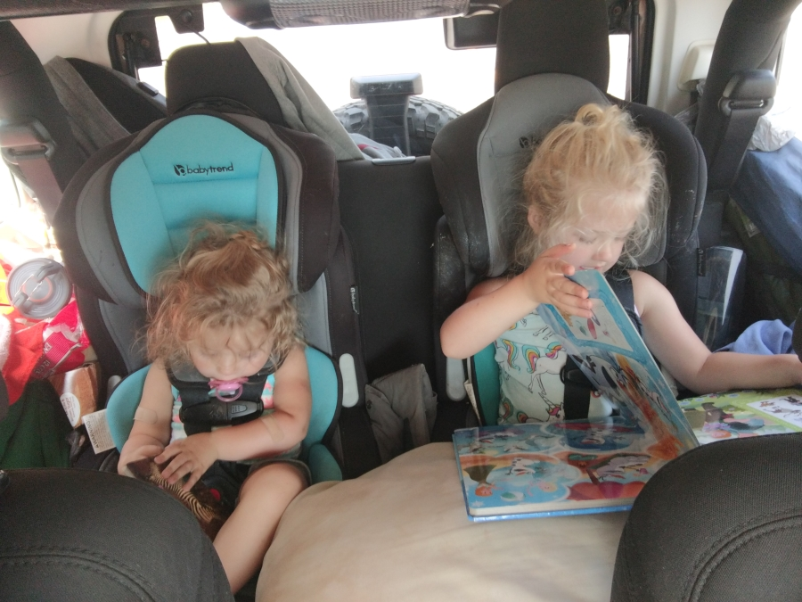

Lets get going!
We were so close I could taste it. I was restless all night, and woke up before the alarm. (It was bound to happen eventuallyPretty soon everyone was packed up into the Jeep and ready to go. We had a special treat as our first destination!
As we were driving out of camp, the sun was rising over Lake Erie. I made a, slightly illegal, u-turn and pulled into a local Marina to get some pictures.
Lake Erie The Marina Happy Couple!We had passed a sign for Dunkin Donuts the other day, but didn't get a chance to stop. It was a sign we were back on the east coast. Abigail may of squeeled in joy.
Breakfast and some Coffee Hot Chocolate and BreakfastThe Route
We had around 600 miles to drive today, an estimated 9 hours in the Jeep. We were average an extra 25% ontop of whatever the GPS says. Every stop, even just for gas ends up pushing the time back 30-45 minutes. The joys of kids.
Abigail had a box of activies she kept hidden from the girls until today, it included some sticker packers, coloring books, and other various activities. The girls were excited, up until they fell asleep.
 The girls read a lot of books this trip ZzZzZZzIt felt like we stopped at every rest-stop. Between Bathroom breaks, food, the need to stretch, or getting gas. We saw some interesting sites.
As curious as I was, I did not want to know who was driving this.Abigail and I were still tired, but we swapped off driving every hour or so. Some of those rest-stops we used to refuel ourselves with coffee, energy drinks, and junk food.
Abigail's Chai Tea Latte. I had a Pike Roast with EspressoLost Credit Card
We drove thousands of miles, spent over 100 hours in the Jeep. And it wasn't until we were almost home that we lost my credit card. We had gotten gas a hour or so prior to this stop. I had put the credit card in my pocket after filling up, and then got into the Passenger seat so Abigail could drive.
This stop wasn't a Jeep refuel stop, but a stop for us. Talk about an instant wake-up when you look into your wallet, your pockets, and the cup-holders and can't find your credit card.
Abigail and I frantically searched the Jeep but couldn't find it. Luckily in todays modern world, I was able to freeze the card online. I have other methods of paying, but I wanted to keep everything on one card to make it easier to track and manage the costs. Oh well.
I gave Abigail a different card for her to go in and get some snacks for the girls, and I continued to tear apart the Jeep. After I started pulling the girls toys out, and digging through their toy box I found the card. Whew!
Somehow it had fallen out of my pocket, slid under the passenger seat, and ended up under the girls toy box. Go figure. I quickly re-activated it and we got on our way. I was wide awake now!
Abigail learned to not take pictures of me when I'm cranky. So enjoy this awesome picture of the Jeep in NY!Massachusetts
It was my turn to drive and we were so close to "New England". Massachusetts was under 50 miles away, and I didn't want to stop. Even if my bladder was about to explode. When we changed drivers, the Jeep was close to 17MPG. I know the Jeep is an object, no brain, no emotions but I believe it knew we were almost home.
The Jeep was giving it all it could, and wasn't complaining on how I was driving. By the time we finally stopped in Massachusetts for Gas and a much needed Bathroom break, it was down to 15.3 MPG. I owed this Jeep some TLC when we got home.
Almost home!We were about 2 1/2 hours from home when Jenna tells us she doesn't want to go home.
She gives us this look a lotOf course when we were in Massachusetts is when we hit traffic. There was almost stand-still traffic for a hour or so before we got close to the NH border.
Hello NH! Signs of the end - a taste of the trafficHome at last
We told Thea that we were home and her look was priceless.
So excited!Our first stop was Market Basket, we knew our fridge was empty. The girls wanted Pizza, while we wanted chicken wings and salad. The jeep was already full so poor Abigail had to sit with everything on her lap.
Nearly home!The Apartment
It felt good pulling into a parking spot at our apartment. We unloaded the girls, and brought some stuff inside. We let out a collective sigh in relief.
We still had to open the tent up one more time in order to get our bedding out. We were going to leave most of our junk in the Jeep until tomorrow when I could spend time to clean it out.
Girls chasing me as I drive to a more empty spot Opening the tent up. Hard to believe we had all this folded up into the tent.As everyone ran off inside, leaving me outside alone with the Jeep. I took my time folding the tent back up and reflected on our trip. I asked a lot of everyone. Everyone blew my expectations out of the water. I am truly blessed by my family.
We drove a lot in this little Jeep, we all had some meltdowns but overall everyone was on their best behaviour. The girls did amazing considering how much time they spent in their carseats. Abigail was beyond amazing. I can't express how much I love her.
Finally I closed up the Jeep, parked her in her normal parking spot and went inside to my family.
The Stats
- The jeep was running for about 110 hours.
- Most Requested Song by Jenna: Meant to Be - Bebe Rexha FT Florida Georiga Line
- Cracked Windows: 0
- Gas Refills: 30
- Total $ spent on Gas: $723.76
- Total times lost: 4
- Total injuries: 0
- Total Smiles per Mile: 9000
- Total Miles Driven: Around 6000. (Note: If we didn't take a wide route, it would of been around 3500 round trip.)
 The rough Route
The rough Route